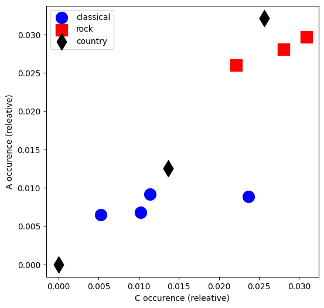
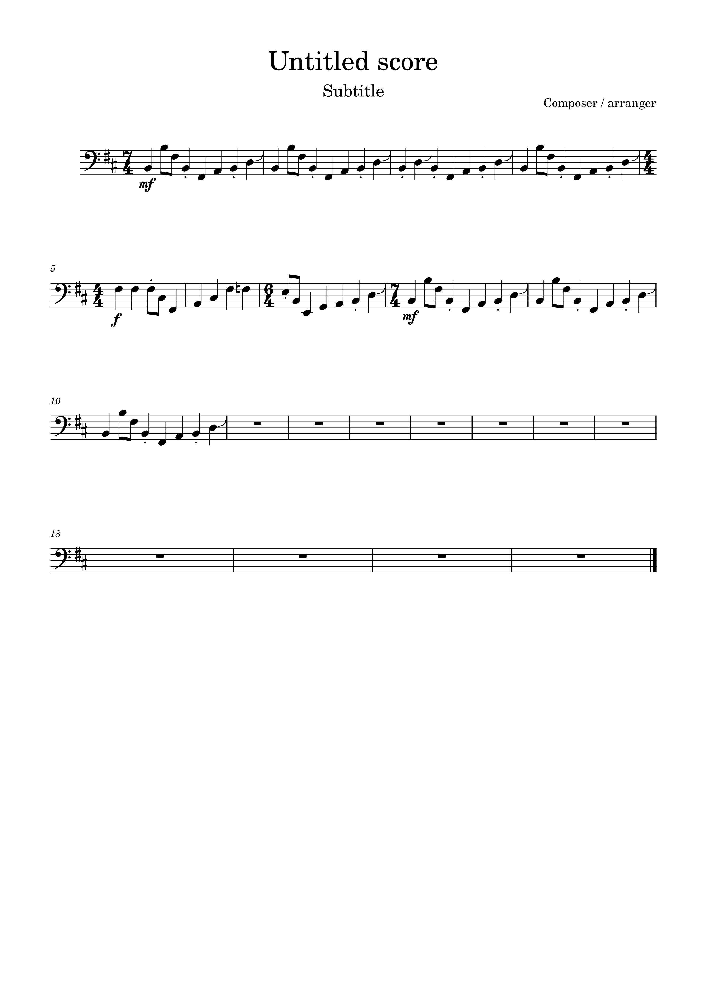
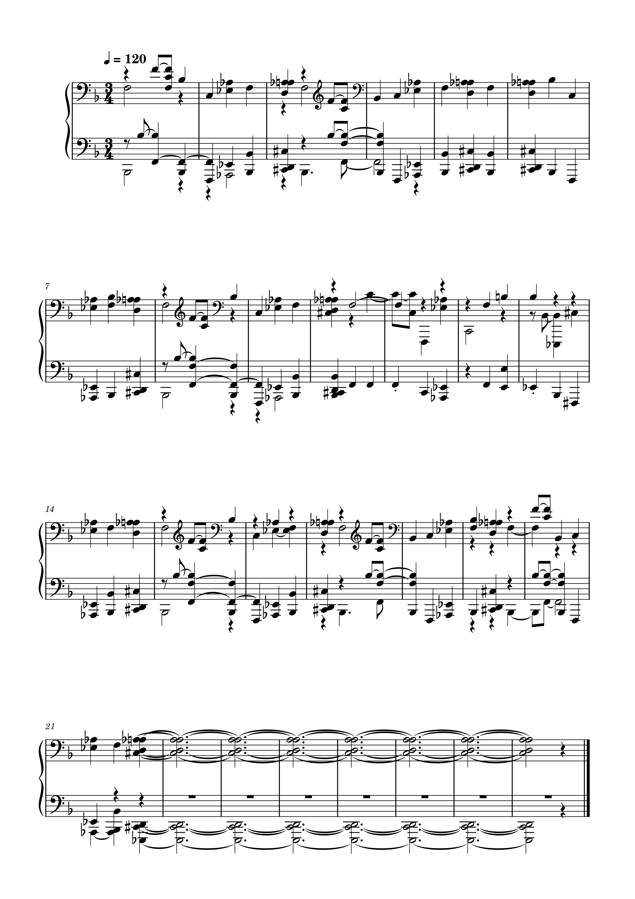

Download the file here

Wish you were here
Download the file here
Reaction in g
Download the file here

Great gig in the sky
Download the file here

Visualising tracks in 2D and computing distance

Difference between graphs

Oringinal image

Polyphonic Transciption

the transcription is pretty good at keeping the Rythmn of the piece despite it being in 7/4. It does however render it as 3/4 instead but yet somehow still stays rythmically accurate. The theme is still easy to notice but there are a lot of added dissonant pitches that have been picked up despite being taken from a synth (musescore). some times it plays octaves of the single line like at the end of bar 6 but the data has somehow been altered yet the general rythmn and pitch has somewhat remained. I also noticed it has extended the piece by holding the notes despite the original piece coming to an abrupt stop. the treble and bass cleft has also been mixed up somehow throughout the piece. finally i can see that the volume change has not been picked up in the transcription. while the track is still recognisable, some volume and timing data has been lost or corrupted, and some notes have been added despite not being in the original piece.